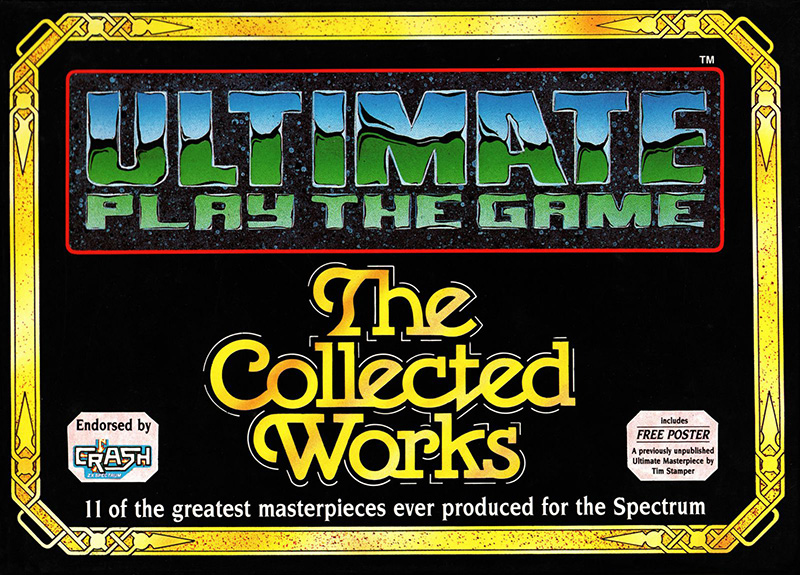
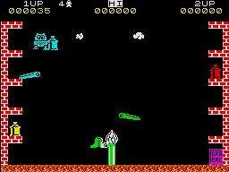

The Collected Works


{kind=link}

| Publisher: | Ultimate Play the Game |
| Price: | £12.99 Cass, £14.99 Disk |
| Year: | 1988 |
| Source: | CRASH, Issue 56 |
Back in those heady days when software companies were young and innocent (now those were The days - Ed), when CRASH was mostly monochrome and no-one owned a Spectrum 128K, it was almost impossible to top an Ultimate game. Each one was anticipated with unbearable impatience and praised to the skies when it finally arrived. When Ultimate changed its name to Rare Ltd and, after a period of dormancy, transferred its attentions to the Nintendo. it seemed like the end of an era - and it was.

The Collected Works captures the best of Ultimate (in other words, nearly every game they produced) on one compilation pack. The 11 games trace the development of Ultimate's technique from the earliest 2-D exploration games like Atac Atak (92%, Issue 1 and 2) and Sabre Wulf (95%, Issue 6) to Knight Lore (94%, Issue 12), Alien 8 (95%. Issue 15) and Gunfright (92% Issue 25) which pioneered the revolutionary 3-D Filmation and Filmation 2 techniques. Practically all the games demand extensive exploration and pose plenty of puzzles. Finding the correct solutions depends on a combination of careful timing and technique Whether you're tramping through a Knight Lore castle, a medieval Nightshade village or a gun-smoking Wild West town, there are endless chances to explore, discover and die.
Obviously, what was hailed as 'state of the art' in its time isn't quote as revolutionary now. Knight Lore was followed by a spate of 3-D isometric perspective clones which, as time progressed, became faster and more sophisticated than the original. Alien 8 and Nightshade can't compete with more modem games like Head Over Heels in terms of complexity but they are still extremely playable and great fun to explore.
Inevitably, one or two of the Collected Works are less playable than others (if you ask me, there're all fantastic; 'specially Cookie and Pssst in 16K" - Ed), but for the classic games Sabre Wulf, Knight Lore. Jetpac. Alien 8. Lunar Jetman and Atic Atac, the package is well worth the compilation price. If you missed out the first time. don't miss out now. This is going to be one of the most sought after compilations of the year, make sure you've got it!
| Overall: | 97% |